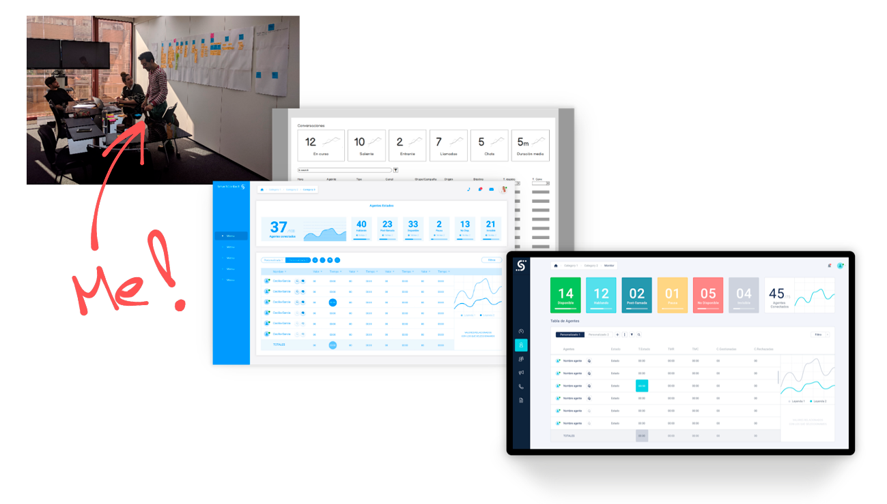
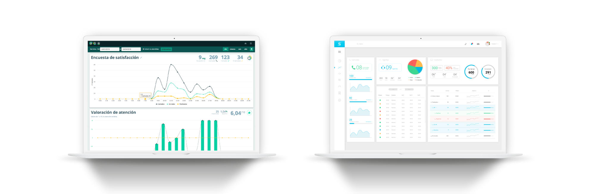

SmartContact
SmartContact is a comprehensive ecosystem that allows companies manage and monitor their agents and multichannel communication such phone, SMS, chat and chatbot
The problem
This project's challenge was to create a unified platform which integrates several different isolated products, which however had interrelated functionalities. Most of these separated products were originally created by several teams or by acquisition of other companies. That is why, despite having similarities from a business perspective, all of them had different interaction styles, flows, sometimes even opposite logic, and completely different user interfaces. This generated conflicts in the user's mental model making the whole experience negative.
There were clients that just needed to satisfy certain communication aspect, like sending SMS reminders, and more advanced clients who required a fully comprehensive communication management and monitoring platform, for example to fine tune advanced features and settings of a call center. Due to these differences, the goal then was to offer a versatile product which allowed for fast set up and easy use as well as offering the full advance potential for our heavy clients
The process
User research
Due to internal restrictions, I could not have access to external users, so we collaborated with our internal users (agent and support staff) along commercial workers offering clients' feedback.
Another constrain was that customers and users were already using our products and needed these improvements in terms of usability, user experience and business required functionalities while keeping using them. Therefore, new changes were introduced incrementally to avoid confusion and ease the learning curve facing the future unified platform. This helped to overcome customer and users current understanding of existing interface elements and interaction.
 From managing tensions to designing for flexibility
There was big number of stakeholders involved: Accounting, several development and sales teams, a hierarchy of resellers of our products and direct clients, customer service team and of course the all the final users. I found in the interviews that balancing and satisfying all their different and sometimes opposite needs and interests into what the final product should satisfy was extremely complex.
Eventually, stakeholders accepted some tradeoffs allowing to reduce, to a certain extent, the complexity and scope. It was mostly achieved by removing features not very common to most customers. With these decisions, in exchange, we facilitated a better design, more coherent and natural.
Our personas not only had different needs and interests but also were in contradiction sometimes. After all, not everyone would use the entire new platform capabilities in full. For example, there was clients that just needed to have a few agents to manually call their customers and other resellers that needed to track several sub-clients which, in turn, had thousands of agents actively carrying out marketing campaigns or providing costumer support services. Moreover, all this happened trough several communication channels. This force us to iterate a lot until we reach the conclusion that a module-based platform with big ability for customization was the best solution.
The outcome
The platform was launched covering many features but not all were included on the first version when I decided it was time to start a new chapter in my life. The following video showcases the result after a graphic designer colleague finished the visual aspect of the platform.